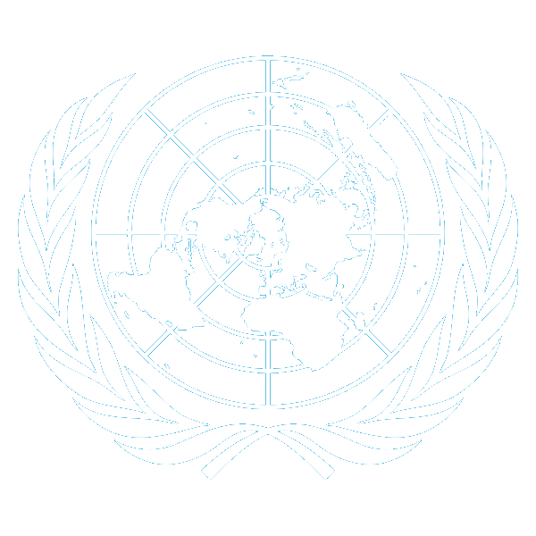
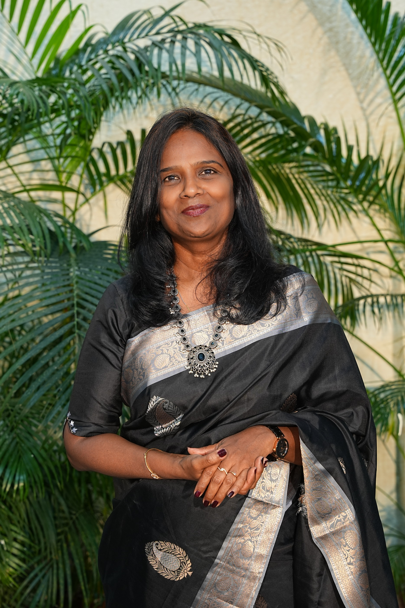
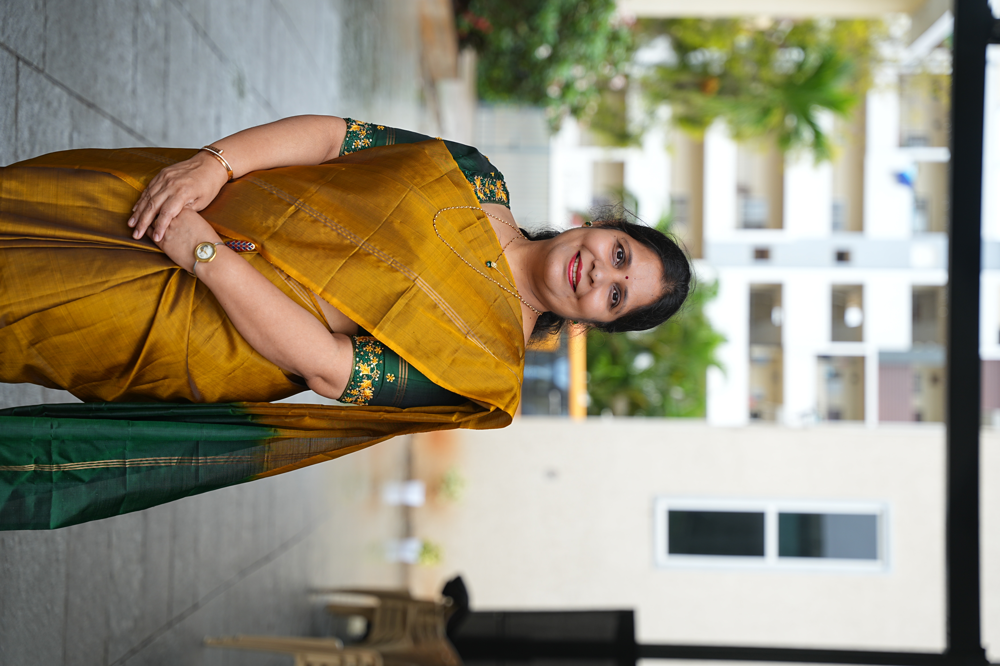

CSMUN is the official Model United Nations conference hosted by Cornerstone School. It is a platform for passionate delegates to engage in diplomacy, debate, and global problem-solving. Join us this August as we simulate world-class committees, foster collaboration, and develop the leaders of tomorrow.
Dear Delegates,
Dear Delegates,
Model United Nations (MUN) has been an integral part of Cornerstone School for the past three years, shaping
the academic and personal journeys of our students in profound ways.
Integrating MUN into our school’s curriculum has significantly enriched students' exposure, research skills,
academic development, social interaction, and personal growth. Many of our learners, after participating in
MUN, have chosen more meaningful and purpose-driven academic paths. As they delved into real-world issues
discussed by the United Nations, they developed empathy, curiosity, and a drive to become part of the
solution. This awareness empowered them to equip themselves with the knowledge and skills needed to contribute
meaningfully to the socio-economic development of communities around the world.
MUN equips students with the skills, knowledge, and confidence required to navigate and thrive in an
increasingly interconnected world. By fostering global awareness, critical thinking, and diplomacy, it
prepares our learners to become informed, responsible, and active global citizens. With so many benefits, it’s
clear that Model UN should be a vital part of every school’s vision for holistic education.
Wishing our dedicated team of educators and students the very best for their 2025 MUN. May this experience
help them grow into compassionate, thoughtful, and empowered individuals—exactly what the world needs today.
Sharmila Solomon
Founder Director,
Cornerstone School

It is with great pride and enthusiasm that I welcome you to our school’s Model United Nations (CSMUN).As the
Principal of Cornerstone School, I firmly believe that MUN is more than just an extracurricular activity—it is
a transformative experience that shapes future leaders, diplomats, and global citizens.
In today’s interconnected world, the ability to engage in meaningful dialogue, understand diverse
perspectives, and collaboratively solve complex issues is invaluable. Our MUN program provides students with a
platform to develop critical thinking, public speaking, negotiation, and leadership skills while tackling
real-world challenges. By simulating the workings of the United Nations, participants gain a deeper
appreciation for international relations, diplomacy, and the power of consensus-building.
To our delegates, I encourage you to embrace this opportunity with passion and curiosity. Step out of your
comfort zones, debate with confidence, and forge connections with peers from different backgrounds. Remember,
the skills you cultivate here— research, empathy, and problem-solving—will serve you well beyond the
committee room.
As Kosi Annan once said,
"You are never too young to lead, and you should never doubt your capacity to inspire change."
Let these words guide you as you engage in spirited debates, draft resolutions, and work toward solutions for
a better world.
I extend my deepest gratitude to our dedicated MUN advisors, faculty, and student organizers for their hard
work in making this program a success. Your commitment to excellence inspires us all.
Now is your time to step forward! Whether you're a seasoned delegate or new to MUN, we invite you to join
this exciting journey. Register today, raise your voice, and be part of a movement that shapes tomorrow’s
leaders.
Together, let us strive to create a more just, peaceful, and sustainable world—one resolution at a time.
Warm regards,
Shilpa Sethi
Principal,
Cornerstone School

If you have any questions or need assistance, feel free to reach out!